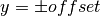

Datasets¶
Contents
This module contains all relevant functions to generate datasets.
API¶
1D Regression Dataset with heteroscedastic Laplace error¶
The module data.special.regression1d_bimodal_data contains a data handler
for a CL toy regression problem. The user can construct individual datasets with
this data handler and use each of these datasets to train a model in a continual
learning setting.
-
class
data.regression1d_heteroscedastic_data.HeteroscedasticToyRegression(train_inter=[-10, 10], num_train=20, test_inter=[-10, 10], num_test=80, val_inter=None, num_val=None, map_function=<function HeteroscedasticToyRegression.<lambda>>, scale=0, factor=5, rseed=None, perturb_test_val=False)[source]¶ Bases:
hypnettorch.data.special.regression1d_data.ToyRegressionAn instance of this class shall represent a simple regression task, but with a heteroscedastic Laplace error distribution.
-
train_x_range¶ The input range for training samples.
-
test_x_range¶ The input range for test samples.
-
val_x_range¶ The input range for validation samples.
Generate a new dataset.
The input data x will be uniformly drawn for train samples and equidistant for test samples. The user has to specify a function that will map this random input data onto output samples y.
- Parameters
train_inter – A tuple, representing the interval from which x samples are drawn in the training set. Note, this range will apply to all input dimensions.
num_train – Number of training samples.
test_inter – A tuple, representing the interval from which x samples are drawn in the test set. Note, this range will apply to all input dimensions.
num_test – Number of test samples.
val_inter (optional) – See parameter test_inter. If set, this argument leads to the construction of a validation set. Note, option num_val need to be specified as well.
num_val (optional) – Number of validation samples.
map_function – A function handle that receives input samples and maps them to output samples.
scale – If not zero, Laplace white noise with this scale will be added to the training outputs.
factor – The std of the noise will be this many times larger at the right side of the data as on the left side.
rseed – If
None, the current random state of numpy is used to generate the data. Otherwise, a new random state with the given seed is generated.
-
static
plot_datasets(data_handlers, inputs=None, predictions=None, labels=None, fun_xranges=None, show=True, filename=None, figsize=(10, 6), publication_style=False)[source]¶ Plot several datasets of this class in one plot.
- Parameters
data_handlers – A list of ToyRegression objects.
inputs (optional) – A list of numpy arrays representing inputs for each dataset.
predictions (optional) – A list of numpy arrays containing the predicted output values for the given input values.
labels (optional) – A label for each dataset.
fun_xranges (optional) – List of x ranges in which the true underlying function per dataset should be sketched.
show – Whether the plot should be shown.
filename (optional) – If provided, the figure will be stored under this filename.
figsize – A tuple, determining the size of the figure in inches.
publication_style – Whether the plots should be in publication style.
-
2D Regression Dataset with bimodal Gaussian Error¶
-
class
data.regression2d_bimodal.BivariateBimodalRegression(train_inter=[-10, 10], num_train=20, test_inter=[-10, 10], num_test=80, val_inter=None, num_val=None, map_function=<function BivariateBimodalRegression.<lambda>>, cov=array([5. , 0.5]), offset=2, rot_angle=0.78, rseed=None, perturb_test_val=True)[source]¶ Bases:
data.regression2d_gaussian.BivariateToyRegressionGenerate a new regression dataset from scalar x to depending bivariate y.
The input data x will be uniformly drawn for train samples and equidistant for test samples. The user has to specify a function that will map this random input data onto output samples y.
Default parameters for the noise give a bimodal distribution that looks marginally gaussian.
- Parameters
train_inter – A tuple, representing the interval from which x samples are drawn in the training set. Note, this range will apply to all input dimensions.
num_train – Number of training samples.
test_inter – A tuple, representing the interval from which x samples are drawn in the test set. Note, this range will apply to all input dimensions.
num_test – Number of test samples.
val_inter (optional) – See parameter test_inter. If set, this argument leads to the construction of a validation set. Note, option num_val need to be specified as well.
num_val (optional) – Number of validation samples.
map_function – A function handle that receives input samples and maps them to output samples.
cov – If not zero, Gaussian white noise with this covariance will be added to the training outputs. If scalar, the covariance is the identity scaled by cov. If 2d, the covariance is diag(cov). If 2x2, cov is the covariance.
offset – Noise will have two modes with means symmetrical to y=0 separated with means located at  prior to rotation by :param rot_angle:.
rot_angle – Rotation angle by which to rotate the noise vector.
rseed – If
None, the current random state of numpy is used to generate the data. Otherwise, a new random state with the given seed is generated.
-
property
cov_matrix¶ Covariance matrix of each mode. Covariance is the same for both modes.
Note
This is not the covariance input during initialization. This is the covariance obtained after rotating the noise modes. It relates to the input covariance through: .. math:
cov \leftarrow R imes cov imes R^T
where
 is the rotation matrix obtained from the specified
rotation angle and can be obtained through :property:`rot_matrix`.
is the rotation matrix obtained from the specified
rotation angle and can be obtained through :property:`rot_matrix`.
-
property
mean_mode1¶ Mean of first mode. (2D position vector)
-
property
mean_mode2¶ Mean of second mode. (2D position vector)
-
property
offset¶ Half the distance between the two modes means.
-
property
rot_angle¶ Rotation angle of the noise distribution around its symmetry center.
-
property
rot_matrix¶ 2D rotation matrix corresponding to the specified rotation angle by which the noise distribution is rotated.
2D Regression Dataset with Gaussian Error¶
-
class
data.regression2d_gaussian.BivariateToyRegression(train_inter=[-10, 10], num_train=20, test_inter=[-10, 10], num_test=80, val_inter=None, num_val=None, map_function=<function BivariateToyRegression.<lambda>>, cov=0, rseed=None, perturb_test_val=True)[source]¶ Bases:
hypnettorch.data.dataset.DatasetGenerate a new regression dataset from scalar x to depending bivariate y.
The input data x will be uniformly drawn for train samples and equidistant for test samples. The user has to specify a function that will map this random input data onto output samples y.
- Parameters
train_inter – A tuple, representing the interval from which x samples are drawn in the training set. Note, this range will apply to all input dimensions.
num_train – Number of training samples.
test_inter – A tuple, representing the interval from which x samples are drawn in the test set. Note, this range will apply to all input dimensions.
num_test – Number of test samples.
val_inter (optional) – See parameter test_inter. If set, this argument leads to the construction of a validation set. Note, option num_val need to be specified as well.
num_val (optional) – Number of validation samples.
map_function – A function handle that receives input samples and maps them to output samples.
cov – If not zero, Gaussian white noise with this covariance will be added to the training outputs. If scalar, the covariance is the identity scaled by cov. If 2d, the covariance is diag(cov). If 2x2, cov is the covariance.
rseed – If
None, the current random state of numpy is used to generate the data. Otherwise, a new random state with the given seed is generated.
-
property
cov_matrix¶ Covariance matrix.
-
property
test_x_range¶ The input range for test samples.
-
property
train_x_range¶ The input range for training samples.
-
property
val_x_range¶ The input range for validation samples.
Helper functions for generating different datasets¶
A collection of helper functions for generating datasets to keep other scripts clean.
-
data.data_utils.compute_1D_uncertainty_stats(config, writer, data, mnet, device, hnet=None, log_likelihood=False)[source]¶ Compute uncertainty statistics for 1D toy regression experiments.
In particular, this function computes the mean, the variance, the entropy, the multi-modality score and the model disagreement (for Bayesian models) at a specific input location determined by the input
x.- Parameters
config – Command-line arguments.
writer – Tensorboard summary writer.
data – A data loader.
mnet – The network.
device – The cuda device.
hnet – The (optional) hypernetwork. Provided when the model is a NF.
log_likelihood (bool) – Whether to plot the likelihood in a log scale.
- Returns
Dictionary with all relevant statistics at the requested point.
- Return type
(dict)
-
data.data_utils.compute_model_disagreement(params)[source]¶ Compute the model disagreement.
The model disagreement is computed here as standard deviation of the parameters of the likelihood averaged over the dimensionality of the space to obtain a scalar. In the manuscript it is called $mathcal{U}_V(x)$.
- Parameters
params (torch.tensor) – This are the parameters of the likelihood model. - Mean for GLc - Mean and variance concatenated for GL - Weights for the Normalizing flow model
- Returns
The model disagreement.
- Return type
(float)
-
data.data_utils.compute_multimodality_score(z)[source]¶ Compute the uni-modality score of the predictive distribution.
Fits a mixture of two Gaussians to the input samples and tests the resulting mixture for unimodality and returns scores of unimodality.
- Parameters
z (np.array) – The predictions at the origin for different y values, averaged across models.
- Returns
The mixing factor between the two Gaussians. d (float): A score of the overlap between the two Gaussians.
The formula is given by: ..math:
d = \frac{|\mu_1-\mu_2|}{2\sqrt{\sigma_1 \sigma_2}}
is_unimodal (bool): Whether the mixture is unimodal.
- Return type
p (float)
-
data.data_utils.generate_task(config, writer, dataset)[source]¶ Generate a set of user defined tasks.
- Parameters
config – Command-line arguments.
writer – Tensorboard writer, in case plots should be logged.
dataset (str) – The name of the dataset to be used.
- Returns
Tuple containing:
- data_struct: The data structure and data handler (for non
steering angle experiments).
- tuple: For the steering angle dataset, a tuple with train,
validation and test loaders.
- Return type
(…)
-
data.data_utils.load_image(image_path, folder_path='../data/splitting_lane_images/')[source]¶ Load a certain image and make it suitable for torch processing.
-
data.data_utils.open_udacity_ch2(config, create_train_loader=True)[source]¶ Open the UdacityCh2 dataset and create the corresponding dataloaders.
- Parameters
config – Command-line options.
batch_size – Batchsize for all data loaders.
create_train_loader (bool) – Whether a loader for the training set should be generated.
- Returns
Tuple containing:
[data_handler, train_loader, val_loader, test_loader]Note,train_loaderandval_loadermight beNone.- Return type
(tuple)
-
data.data_utils.parse_cov_matrix(cov_str)[source]¶ Parse a command line string cov matrix into a list of floats.
-
data.data_utils.test_splitting_image(mnet, data, device, config, shared, logger, writer, mode, hnet=None, epoch=None)[source]¶ Test the networks on an image with splitting lanes.
- Parameters
mnet – The main network.
device – The device.
config – The configuration.
shared – Namespace with useful information.
logger – The logger.
writer – The tensorboard writer.
mode – The mode of the experiment (gl, ghl or nf).
hnet – The (optional) hypernetwork.